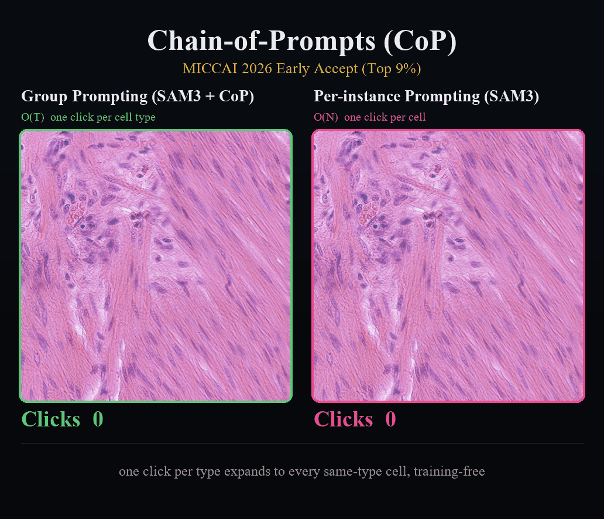
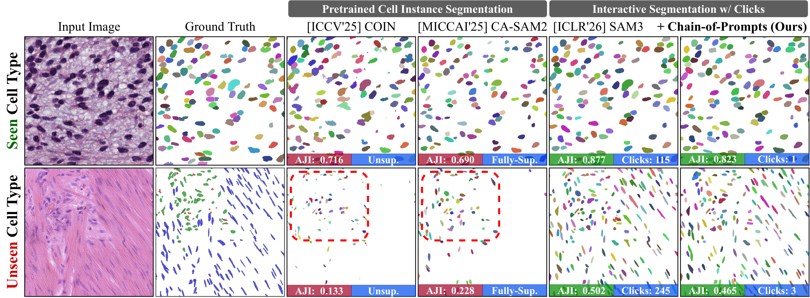
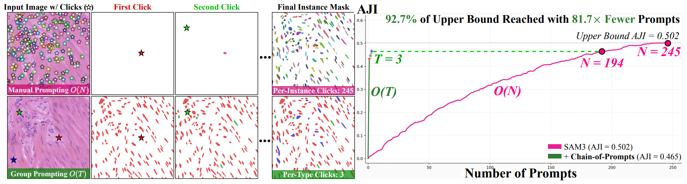
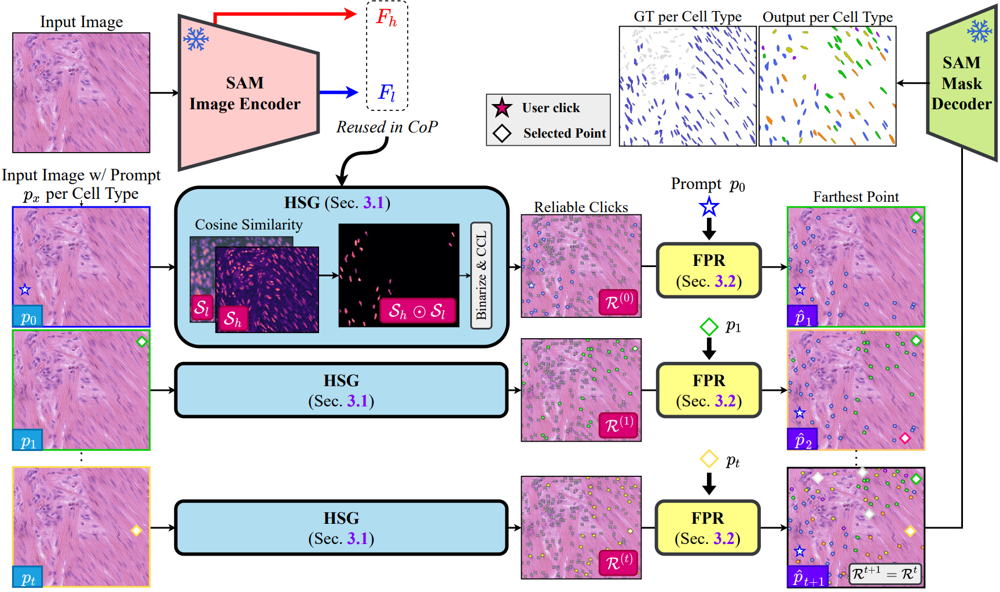
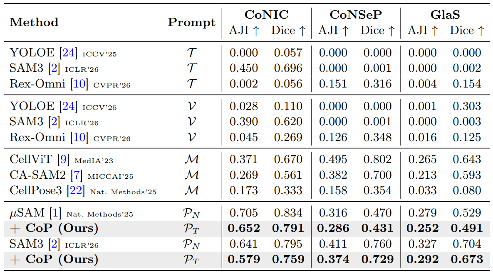
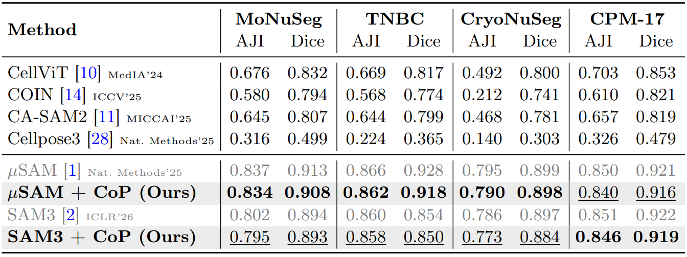
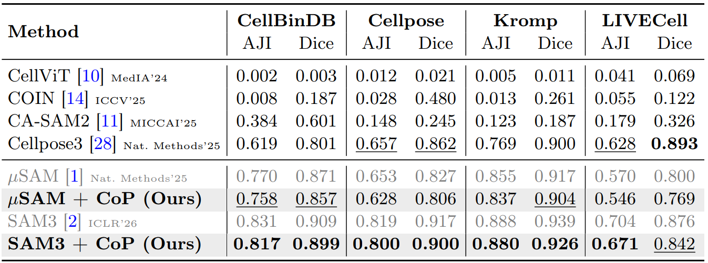
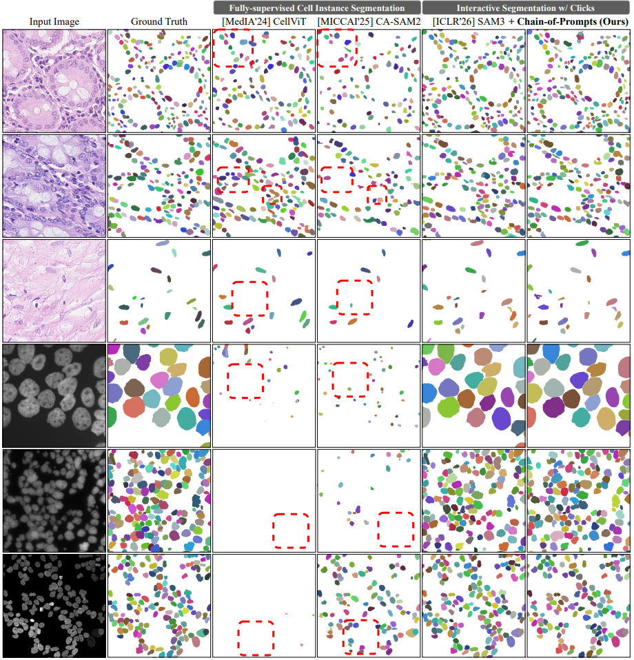
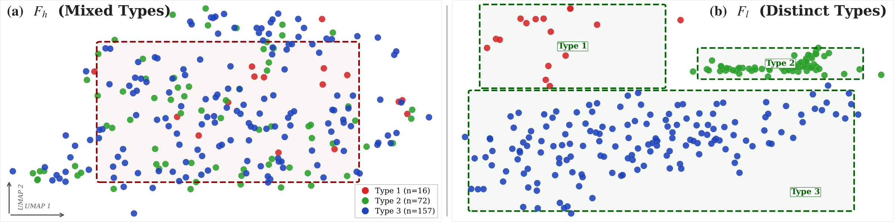

Under Review
Chain-of-Prompts
One Click per Cell Type Suffices: Training-free Group Interaction for Cell Instance Segmentation
1 2Seoul National University
3
2Seoul National University
3
One Click per Cell Type Suffices: Training-free Group Interaction for Cell Instance Segmentation

Group Prompting (SAM3 + CoP) segments every cell in 3 clicks; per-instance prompting (SAM3) keeps clicking to 245.
SAM's frozen image encoder already clusters same-type cells in its feature space before any prompt is given. CoP exploits this property to propagate a single click per cell type to all instances of that type, retaining over 90% of per-instance performance across eleven benchmarks while cutting annotation clicks by 97.6% on average (42.5× fewer), fully training-free.
Cell-specific models break on unseen cell types, while interactive foundation models such as SAM3 require one click per instance. Neither path scales to histopathology images with hundreds of cells.

Existing pipelines force a hard trade-off. Cell-specific baselines and open-vocabulary detectors miss out-of-distribution cell types (red dashed boxes), and SAM3 generalizes only by clicking every cell (e.g., 245 clicks per image).
We replace per-instance clicking, the long-standing O(N) bottleneck, with Group Prompting: one click per cell type, recursively propagated across all same-type cells.

From 245 Clicks to 3 on CoNSeP/test_2. Per-instance prompting O(N) needs 245 clicks to reach the upper bound, while Group Prompting O(T) reaches 93.9% of that upper bound from just 3 clicks (one per cell type), 81.7× fewer prompts.
Cell instance segmentation models trained on cell-specific datasets suffer severe performance drops on out-of-distribution cell types, while interactive foundation models overcome this through per-instance prompting at a cost that is prohibitively expensive for histopathology images containing hundreds to thousands of densely packed instances.
We introduce Group Prompting, a new paradigm that shifts interactive segmentation from per-instance O(N) to per-type O(T), where a single click per cell type suffices to segment all instances of that type. Our key observation is that the frozen image encoder of the Segment Anything Model (SAM) already clusters same-type cells in its feature space before any prompt is given. Exploiting this property, we propose Chain-of-Prompts (CoP), a training-free framework that recursively expands a single user click by (1) identifying reliable same-type locations through non-parametric gating of multi-scale encoder features, and (2) selecting the most spatially distant reliable point as the next prompt to maximize coverage.
Across eleven benchmarks in three regimes, CoP retains over 90% of per-instance performance without any additional training and consistently surpasses fully-supervised baselines: over 90% with one click per cell type on H&E cell-type-annotated data (CoNIC, CoNSeP, PanNuke), 98–99% with one click per image on H&E homogeneous data (MoNuSeg, TNBC, CryoNuSeg, CPM-17), and over 95% under a staining-modality shift on non-H&E microscopy (CellBinDB, Cellpose, Kromp, LIVECell).
Shifts interactive segmentation from per-instance O(N) to per-type O(T) interaction, reducing annotation cost from the number of cells to the number of cell types while remaining robust to out-of-distribution types without cell-specific training.
A training-free framework that recursively expands prompt coverage by combining Hierarchical Similarity Gating (HSG) and Farthest Prompt Recursion (FPR), maintaining precision ≥ 96% at every iteration.
Retains over 90% of per-instance performance on H&E cell-type-annotated data, 98–99% on H&E homogeneous data, and over 95% under a staining-modality shift on non-H&E microscopy, outperforming fully-supervised methods that require complete mask annotations.

Two Steps, Zero Training: Identify Reliable Cells, Then Expand. A frozen SAM encoder extracts high- and low-resolution feature maps once per image. HSG turns each user click into a reliable point set via hierarchical similarity gating + connected-component labeling. FPR then iteratively re-prompts the farthest uncovered point until no new cells appear, decoding the converged set into instance masks.
A single feature scale cannot achieve spatial precision and type selectivity simultaneously. HSG element-wise gates SAM's high-resolution and low-resolution features so the product suppresses tissue-level false activations of Fh while preserving its sharp localization, then non-parametrically thresholds at μ+σ and applies connected-component labeling to extract reliable point centroids.
Feature similarity decays across distant tissue regions, so a single prompt under-covers far-away cells. FPR selects the reliable point that is farthest (in image coordinates) from all previous prompts, feeds it back into HSG, and merges newly discovered points into the reliable set. The cycle repeats until convergence, ensuring whole-image coverage without feature drift.
Each point in the converged reliable set is decoded into an instance mask via SAM's frozen decoder; overlapping predictions are resolved by non-maximum suppression at IoU > 0.5. The entire pipeline operates in feature space without any backpropagation or task-specific training.

H&E Cell-Type-Annotated Benchmarks (CoNIC, CoNSeP, PanNuke). Prompt types: Τ text, 𝒱 visual, ✗ unsupervised, ℳ mask supervision, 𝒫N per-instance points, 𝒫T per-type points. With only one click per cell type, CoP retains ≥ 90% of per-instance performance on every benchmark (e.g., 0.731 vs. 0.801 AJI on CoNIC) and outperforms every fully-supervised and open-vocabulary baseline.

H&E Homogeneous Benchmarks (MoNuSeg, TNBC, CryoNuSeg, CPM-17). When cells within an image share similar morphology they act as a single type, so one click per image propagates to the whole field: CoP retains 98–99% of the per-instance upper bound for both μSAM and SAM3.

Non-H&E Microscopy Benchmarks (CellBinDB, Cellpose, Kromp, LIVECell). H&E-trained supervised models collapse under the modality shift (CellViT drops to 0.002 AJI on CellBinDB), while CoP, reading only the frozen encoder's features, preserves > 95% of the per-instance upper bound on all four benchmarks.

Qualitative comparison. Fully-supervised baselines miss cell populations outside their training distribution and collapse to near-empty masks under a staining-modality change (red dashed boxes), while CoP recovers the missing instances from one click per type, or per image when types are unlabeled.

UMAP of SAM's frozen encoder features at GT cell centroids (CoNSeP/test_2). (a) Fh mixes cell types; (b) Fl groups same-type cells without any training. This structure comes from SAM's prompt–mask pretraining, not encoder scale: swapping in DINOv3, EVA-CLIP, or SDXL features drops CoP to ≤ 0.435 AJI on CoNIC (vs. 0.731 with SAM3).
@article{jo2026cop,
title = {One Click per Cell Type Suffices: Training-free Group Interaction for Cell Instance Segmentation},
author = {Jo, Sanghyun and Lee, Seo Jin and Hong, Seohyung and Gang, Yoorim and Kim, Hyeongsub and Seo, Hyungseok and Kim, Kyungsu},
journal = {arXiv preprint arXiv:2605.29429},
year = {2026}
}